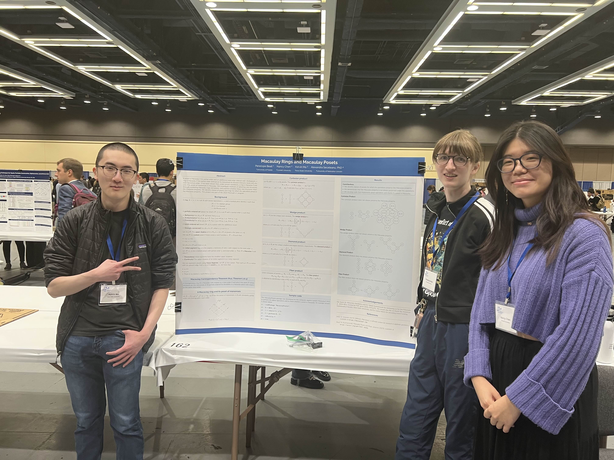
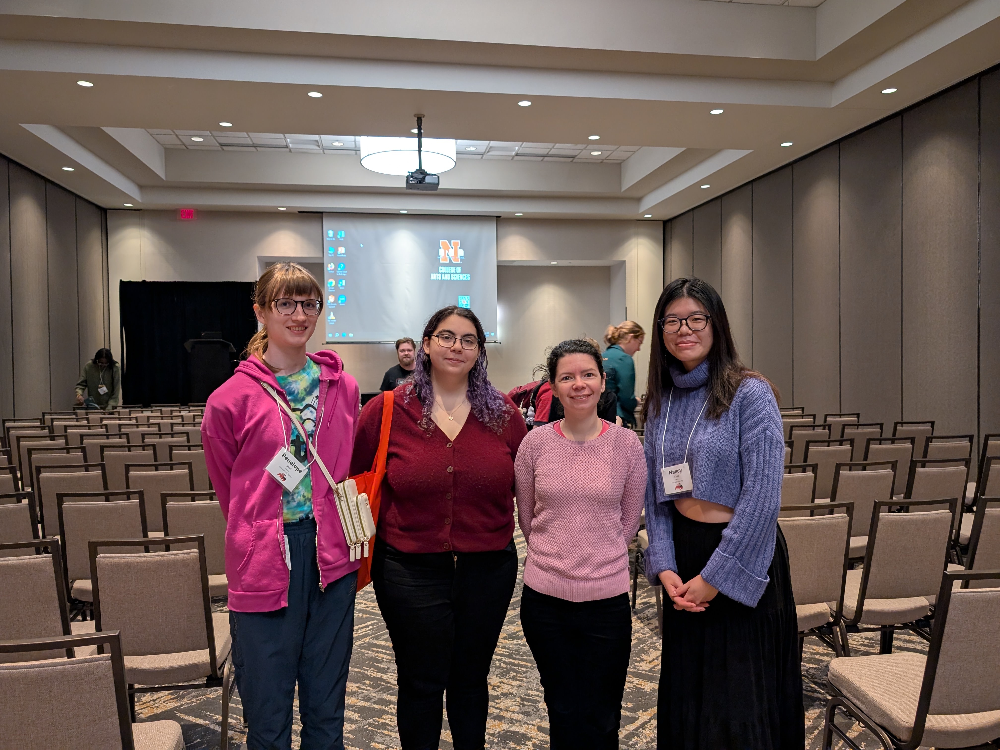
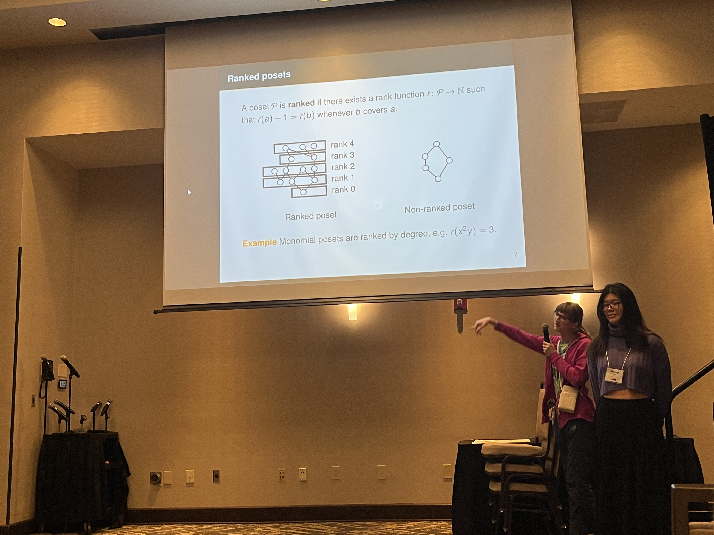

E-mail: pbeall at ucdavis dot edu
CV: cv.pdf
My group in the Experimental Math Lab at PCMI 2025 spent a couple weeks working on Chvátal's conjecture. Our slides are below.
Below are my slides from the UMS Spring 2025 Undergraduate Talk Extravaganza.
Below are some things resulting from the project I was in at Polymath Jr 2024. We studied Macaulay posets and rings.
|
 Kelvin Ma, Penelope Beall, and Nancy Chen at JMM 2025 |
 Penelope Beall, Nava Minsky-Primus, Dr. Alexandra Seceleanu, and Nancy Chen at NCUWM 2025 |
 Penelope Beall, Nancy Chen, and, outside the frame, Nava Minsky-Primus, at NCUWM 2025 |
Below is my submission for an open-ended assignment in the combinatorics course I was in in spring 2024. It's an expository description of how formulas from propositional logic can be arranged into a poset where disjunction/conjunction (∨/∧) become join/meet (also denoted ∨/∧).